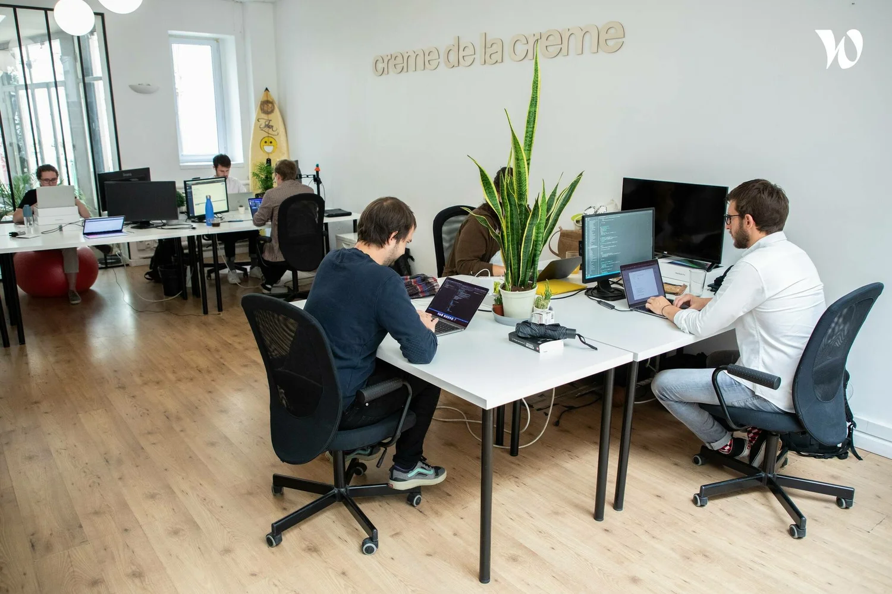

Crème de la Crème
ou la freelance à la française
Découvrez la situation économique de l’entreprise Crème de la Crème : le nombre d’employés, les levées de fonds ainsi que les principales informations financières.
Découvrir

Découvrez les démarches écologiques mises en place par Crème de la Crème et la manière dont notre modèle favorise un impact positif sur l’environnement. Apprenez aussi comment le travail en freelance contribue à réduire l’empreinte carbone et à encourager un mode de vie plus durable.
En savoir plusDécouvrez l’histoire de Crème de la Crème, son créateur et l’évolution de l’entreprise, de ses débuts à aujourd’hui, ainsi que les grands événements qui ont marqué son parcours.
Lire la suite
